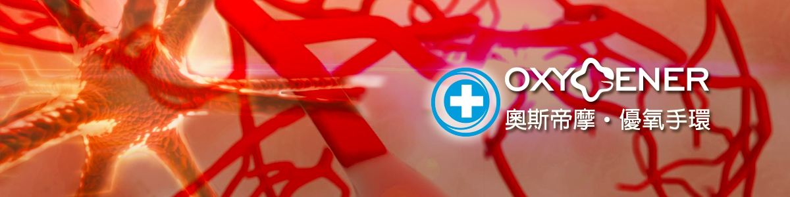

Blog

This is out Blog.
Free weblog publishing tool from Google, for sharing text, photos and video. Free templates/ themes and gadgets/ widgets included.
Copyright 2016.Design by Flexshape
Blog
This is out Blog.
Free weblog publishing tool from Google, for sharing text, photos and video. Free templates/ themes and gadgets/ widgets included.